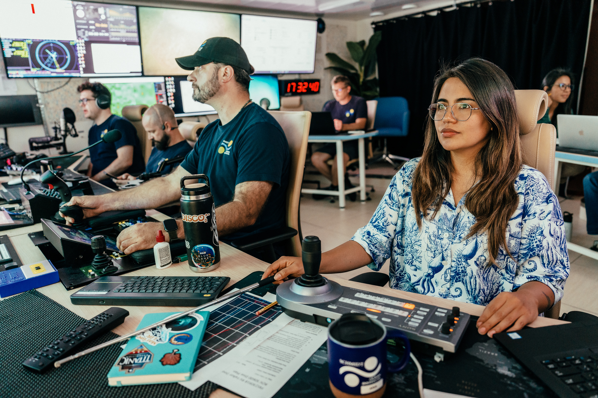
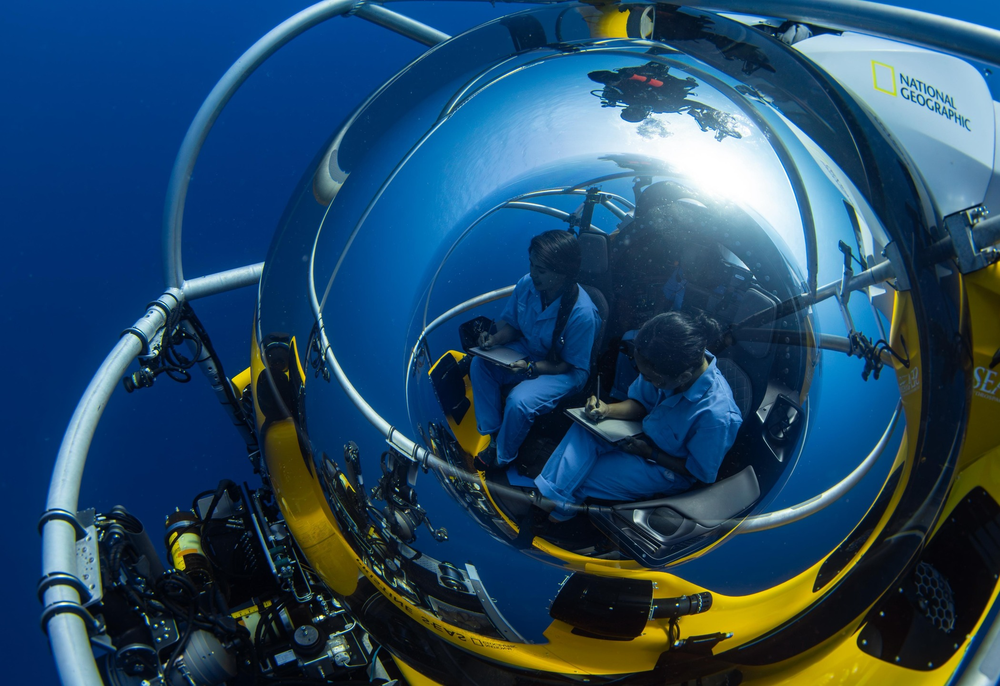
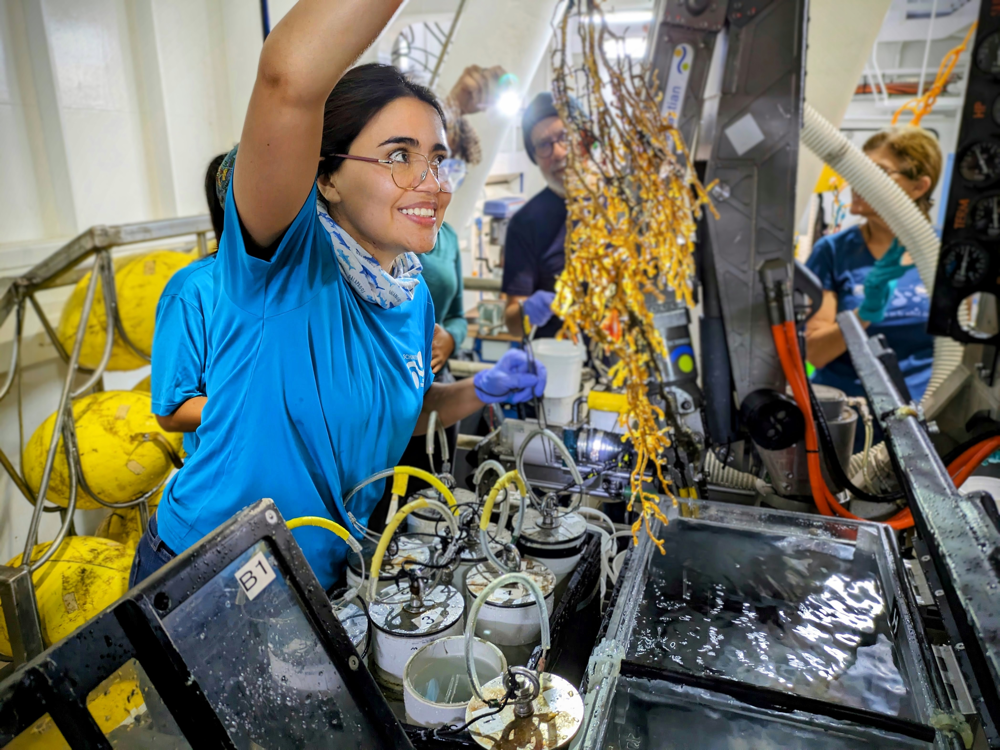

About me

Image credits: Misha Vallejo Prut
I am a marine ecologist and National Geographic Explorer with more than a decade of experience in marine research and conservation, from coral reefs to the deep sea. My scientific path began in my homeland, Ecuador, and in its Galápagos Islands, and has since taken me across the Eastern Tropical Pacific, Caribbean, North Atlantic, South Pacific and Red Sea.
I am a Conservation Leadership Programme alumna and former Erasmus Mundus Plus IMBRSea scholar, completing my MSc through an international programme that provided training across leading European marine research institutions. I later completed my PhD at Memorial University of Newfoundland, Canada, studying the spatial ecology of vulnerable deep-sea fauna.
My concern about environmental change is grounded in what I have witnessed and documented firsthand, from ENSO-driven warming in the Eastern Tropical Pacific to the impacts of repeated Category 5 hurricanes on Caribbean coral reefs. Seeing these disturbances unfold against a background of climate-driven ocean warming strengthened my commitment to understanding how marine ecosystems respond to environmental extremes and long-term change, and to producing science that supports their conservation.
Learn MoreResearch
My research examines marine biodiversity across variable and extreme environments, with a focus on how environmental conditions and habitat structure influence the distribution and vulnerability of marine communities. I have explored these questions across tropical coral reefs and deep-sea ecosystems, from warming and eutrophication experiments on shallow-water corals to habitats influenced by severe oxygen limitation and complex terrain in deep-sea ecosystems.
I combine field observations, marine imagery, habitat mapping and quantitative ecology to understand species-environment relationships and document biodiversity in poorly studied ecosystems. My work has included investigating cold-water coral communities across extreme oxygen gradients in the Eastern Tropical Pacific, examining habitat complexity in North Atlantic deep-sea communities, and establishing new biodiversity records for deep-water sharks, rays and chimaeras in the Galápagos.
Across these studies, I seek to improve our understanding of vulnerable marine ecosystems and strengthen the ecological baselines needed for monitoring, conservation and management.
Learn More
Photo: Manu San Félix / National Geographic Pristine Seas
Skills & Training
Quantitative & Spatial Ecology
Ecological modelling (GAMs), multivariate ecology (OMI/ENFA), spatial statistics (MEMs), and geospatial analysis in R.
Marine Imagery & Habitat Mapping
ROV and underwater imagery analysis, Structure-from-Motion photogrammetry, 3D habitat reconstruction and multiscale terrain analysis using BIIGLE, TATOR, Metashape and CloudCompare.
Marine Field Research
Scientific diving and ecological surveys across coral reef and deep-sea environments; ROV-based research, BRUV and deep-sea camera deployments; CTD sampling and biological specimen collection; shark tagging; coral nursery maintenance, spawning collection and outplanting; underwater survey design and implementation; field navigation, GPS mapping and expedition operations.
Experimental & Laboratory Ecology
Experimental design, coral husbandry, temperature and nutrient manipulations, physiological and reproductive monitoring, eDNA sampling and filtration, biological tissue sampling, microscopy, DNA extraction and PCR.
Scientific Diving & Maritime Training
Certified Scientific Diver (ESDP), PADI and CMAS Divemaster, PADI Dry Suit Diver, PADI Freediver, Emergency First Response, and STCW Safety Training issued by Transport Canada.



Selected Awards, Grants & Scholarships
National Geographic Society Explorer Grant
2023 – presentPrincipal Investigator — Cold-Water Coral Distribution Across Oxygen Minimum Zones in the Galápagos Islands and Isla del Coco
National Geographic–Lindblad Visiting Scientist / Exploration Technology Lab
2026 – presentPrincipal Investigator — Uncovering Chondrichthyes Diversity in the Galápagos Islands
Erasmus Mundus Plus Scholarship
2018 – 2020Full international scholarship for the IMBRSea MSc in Marine Biological Resources, supporting academic and research training across Europe.
Conservation Leadership Programme Grant
2015 – 2016Lead community-based marine conservation project supporting management of the Galera San Francisco Marine Reserve, Ecuador.
School of Graduate Studies Fellowship
2021 – 2025Memorial University of Newfoundland
Languages
Education
Ph.D.
Memorial University of Newfoundland, Canada
Spatial ecology of vulnerable deep-sea fauna
MSc. International Master of Science in Marine Biological Resources (IMBRSea) link
Mention on marine ecology and conservation.
Honors: Magna cum laude.
University of Gent (UGent), Ghent, Belgium. link
Sorbonne University: Biological Marine Station in Roscoff, and Oceanographic Observatory of Banyuls-sur-Mer, France. link
Get In Touch
Interested in collaborations, speaking engagements, or have questions about my research? I'd love to hear from you.
Contact Me